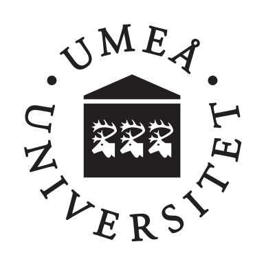

Department of Computing Science
Faculty of Science and Technology

Affiliations


Education
- Ph.D. in Computer Science and Engineering from Tezpur University (a Central University), Tezpur, India in 2014.
- M.Tech. in Information Technology from Tezpur University (a Central University), Tezpur, India in 2009.
- B.E. in Computer Science and Engineering from The Institution of Electronics and Telecommunication Engineers (IETE), New Delhi, India in 2007.
Experience
| Jan'20 - Present | Assistant Professor, Department of Computing Science, Umeå University, Umeå, Sweden |
| Apr'19 - Dec'19 | Visiting Researcher, Laboratory for Cyber Resilience, Nara Institute of Science and Technology, Nara, Japan |
| Sep'17 - Dec'19 | Researcher, Department of Computing Science, Umeå University, Umeå, Sweden |
| Nov'16 - Sep'19 | Associate Professor, Department of Computer Science and Engineering, Assam Kaziranga University, Jorhat, Assam (last two years as lien from the University). |
| Jul'13 - Oct'16 | Assistant Professor, Department of Computer Science and Engineering, Assam Kaziranga University, Jorhat, Assam. |
| Apr'11 - Jul'13 | Senior Research Fellow, CSIR, Assistant-ships in Teaching and Research, Department of Computer Science and Engineering, Tezpur University (a Central University), Tezpur, Assam. |
| Jan'09 - Apr'11 | Research Staff, Assistant-ships in Teaching and Research, Bioinformatics and Network Security Laboratory, Department of Computer Science and Engineering, Tezpur University (a Central University), Tezpur, Assam. |
| Jul'09 - Jul'13 | Part Time Faculty, NIELIT Centre, Tezpur University (a Central University), Tezpur, Assam. |
Achievements
- Offered positions as post-doc researcher in several countries world-wide.
- ISOC Kolkata Chapter India awarded the fellowship to attend IETF 98 physical meeting held on March 26-31, 2017 at Chicago, Illinois, USA, approved by Ministry of Electronics and Information Technology (MeitY), Government of India.
- Best Faculty Award at Assam Kaziranga University, Jorhat, 2016
- Best Paper Award, ACM ICACCI, August 3-5, 2012.
- Senior Research Fellow, Council of Scientific and Industrial Research (CSIR), Govt. of India (2011 - 2013).
- Junior Research Assistant, Dept. of Information Technology, Ministry of Communication and IT, Govt. of India (2009 - 2011).
- Merit-cum-means PG scholarship, Ministry of Minority Affairs, Govt. of India (2007 - 2009).
Conference and Workshop Participation
.......will be updated soon......
Membership
- Member of The Internet Society, United States (No. 144425)
- Life Member of The Institution of Electronics and Telecommunication Engineers (IETE), New Delhi, India (No. AM156909L)
- Member of The Institute of Electrical and Electronics Engineers (IEEE), United States (No. 95422076)